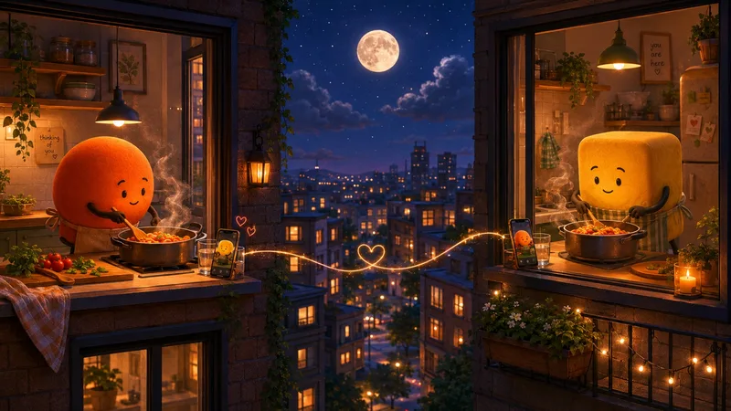

Somewhere tonight, a phone is propped against a water glass on a kitchen table, and a person is eating dinner with someone who is 4,000 kilometers away and also, somehow, right there.
That image is the whole thesis of this article. Long distance relationships do not survive on grand reunions and airport scenes. They survive on the propped phone, the same film started in sync, the goodnight voice note that arrives like clockwork. The couples who make it are not the luckiest or the most in love.
They are the ones who learned, usually by trial and error, that distance is an engineering problem with emotional materials. Here is the engineering.
The honest truth about distance
First, against the folklore: long distance relationships work at rates that embarrass the skeptics. Millions of couples are doing it right now, and study after study finds their satisfaction and stability comparable to same-city couples. Distance, by itself, is not the killer.
What distance actually does is remove the freebies. Same-city couples get connection automatically: the kitchen brush-past, the sofa proximity, the shared errand. None of it requires intention. Distance cancels all of it, which means long distance couples only get the connection they deliberately build. That sounds like bad news. It has a famous silver lining: couples who learn to build connection on purpose often arrive at the same city, eventually, better at love than couples who never had to learn.
Rituals: the heartbeat of long distance
If this article could only keep one section, it would be this one.
A ritual is a recurring moment with a fence around it, and for long distance couples, rituals do the work that physical presence does for everyone else: they make the relationship a reliable fact of daily life rather than a long-running emergency. Predictability is not boring across distance. Predictability is the security.
The portfolio that working couples converge on:
- A daily anchor. Small and unbreakable: the good morning text, the walk-to-work voice note, falling asleep on a quiet call. One touchpoint that happens no matter what the day did.
- A weekly date. A real one, with a fence: same film started in sync, dinner cooked from the same recipe on two stoves, a game played together. Protected like an appointment, because it is one.
- A periodic state-of-us. Every few weeks, fifteen minutes on the relationship itself rather than the day: what's working, what's wearing thin, when's the next visit.
- The next visit, always booked. The single best mood technology in long distance: never be without a countdown. Visits without successors leave a vacuum that the hard nights fill with dread.


Something small is in the works
We're quietly making something for the two of you. Leave your email and we'll surprise you when it's ready.
No spam, no newsletter. One good email when it’s ready.
Quality beats quantity, every time
The classic long distance mistake is compensating for missing presence with constant contact: the all-day text drip, the four-hour calls where both people are actually doing laundry. It feels like devotion. It performs like wallpaper.
The couples who feel close are running fewer, fuller exchanges. One real conversation, attention undivided, beats a day of fragmentary pings, for exactly the reasons in our guide to the quality time love language: attention is the substance, and divided attention across a screen is barely attention at all.
Two upgrades worth stealing. Share the boring: the highlights-only version of your day makes you a news broadcast, while the walk to work, the weird bus moment, and the failed lunch make you a life someone is part of. And rotate better questions, because "how was your day" dies by month two; we wrote fifteen questions specifically for the distance.
The hard parts, handled
Jealousy. Distance feeds it blank space, and imagination decorates blank space badly. The fix is volunteered transparency: who you're with, how the night went, offered before it's asked. Volunteered information builds trust; demanded information builds a surveillance state, and surveillance kills long distance faster than any party photo.
The bad nights. They come, usually after good weekends end. Agree in advance what comfort looks like across a screen: some people want the call, some want the distraction, some want "I know, it's awful, three weeks." Comfort by guesswork, at distance, misses often enough to hurt.
Time zones. The unfair tax. The only answer is that the inconvenience gets shared, alternating who takes the 7am call, rather than silently assigned to whoever protests less.
The end-date question
Here is the finding that should be on a poster: long distance, by itself, rarely ends relationships. Indefinite long distance does.
Couples can endure nearly any distance with a shared answer to "when does this end?", even a rough one, even "after graduation, one city, we'll figure out whose." What corrodes is the missing answer: two people sacrificing daily with no agreed destination, each privately wondering if they're investing in something or just maintaining it.
If you don't have the answer yet, that's survivable. Not having the conversation is the actual risk. Put it on the next state-of-us agenda, gently, as co-conspirators: where is this going, and what would getting there take?
Distance is endurable. Undefined distance is what breaks people.
For your next conversation
- "What ritual of ours would you protect above all the others?"
- "What's the hardest hour of the week to be apart? I'll trade you mine."
- "What's our current answer to 'when does the distance end?' Even a rough one."
The propped phone at the dinner table looks, to outsiders, like a sad substitute for a person.
The couples living it know better. It is a small, stubborn declaration that the distance gets a say in the logistics, and in nothing else.
What long distance couples ask
Do long distance relationships work?
Yes, at rates that surprise the skeptics, and the working ones share traits: regular rituals, honest communication, trust that doesn't require surveillance, and, eventually, a shared answer to "when does the distance end?" Distance doesn't kill relationships; undefined distance does.
How often should long distance couples talk?
There is no correct number; there is a correct agreement. Some thriving couples talk daily, others a few quality calls a week. What matters is that the rhythm is chosen together and kept reliably, because in long distance, consistency does the work that physical presence does for everyone else.
How do you keep a long distance relationship interesting?
Share the boring, not just the highlights: the walk to work, the weird coworker saga, the meal photos. Build parallel experiences, the same film at the same time, the same recipe cooked on two stoves. And keep better questions in rotation; "how was your day" wears out by month two.
How do you deal with jealousy in a long distance relationship?
Name it early and trade information generously, before it's requested. Jealousy across distance feeds on blank space, so the couples who do well fill the space voluntarily: who they're with, how the night went. Surveillance demands kill long distance; volunteered transparency carries it.
Something small is in the works
A little surprise for couples is in the works. Be the first to know.
No spam, no newsletter. One good email when it’s ready.